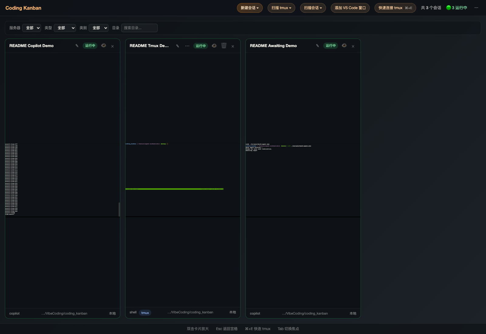
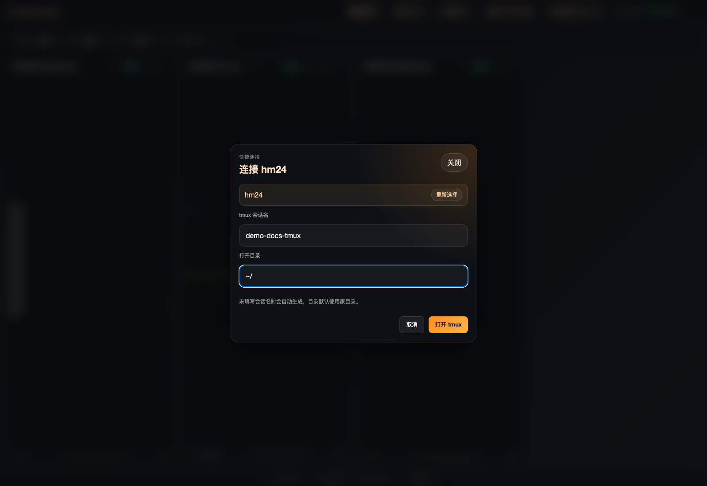
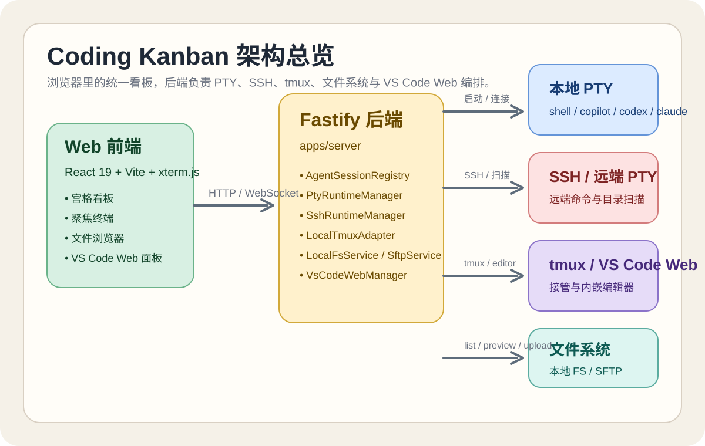
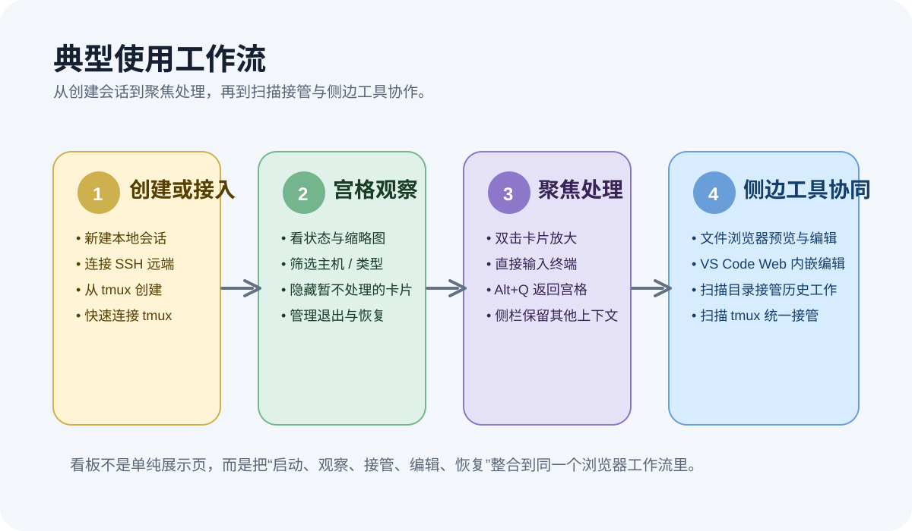
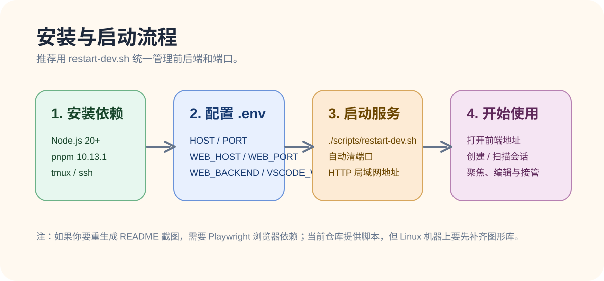

1
你是不是还在为同时进行好几个 coding 会话而忙得手忙脚乱？
Copilot、Codex、Claude、shell 来回切，多个终端窗口反复跳，想接着输一句话都要先找对那个窗口。
相信大家在最近保活的 AI coding 时代，或多或少都会遇到这些问题： 会话越来越多、窗口越开越乱、远程文件越改越麻烦、机器一换环境就得重新连一遍。 Coding Kanban 给出的答案很直接——把本地终端、SSH 远端、tmux、文件浏览器、VS Code Web， 全部收口到一个可视化、可切换、可接管的浏览器工作台里。
Copilot、Codex、Claude、shell 来回切，多个终端窗口反复跳，想接着输一句话都要先找对那个窗口。
ls、cd？看目录、改配置、下日志、传文件，全靠命令行硬切，明明只是想“顺手看一眼、改一行”。
一个项目一个窗口，一台服务器一个编辑器，再开几个终端标签，笔记本风扇直接起飞。
工作流碎在不同客户端里，换台机器、换个网络、换个位置，连接关系就得重新拼一次。
它不是又一个“会开 shell 的页面”，而是一个面向 CLI Coding Agent 的多终端编排工作台： 你可以同屏观察多个会话、双击进入聚焦终端、直接打开远端文件浏览器、 在同一个页面里拉起或复用 VS Code Web，还能把现有 tmux 会话和历史工作目录重新接管进来。
本地 PTY、SSH 远端 PTY、tmux 会话、扫描到的历史目录、观察中的 VS Code 窗口，全部在一张宫格看板里统一展示。
不是看板只负责“看”，编辑器只负责“改”。聚焦态里可以直接开文件浏览器和 VS Code Web， 终端上下文不用断。
更适合本地自托管、内网开发机、团队共享工作台这些场景。换电脑、换位置， 你的工作流不必再拆散重连。
下面这几张图，来自当前仓库对应应用的实时页面截图；既保留 README 里的标准素材，也补充了更贴近宣传场景的现场界面。


Coding Kanban 把会话从“标签页”升级成“看板卡片”。 每张卡片都能显示名称、主机、工作目录、状态、Agent 类型和终端缩略图； 你可以筛选、隐藏、恢复、重命名、关闭、终止 tmux，也能双击直接进入聚焦态。
换句话说，它不是让你“拥有更多终端”，而是让你终于能管理这些终端。


ls / cd 当文件管理器聚焦态下，内置文件浏览器可以直接打开本地文件系统，也支持通过 SSH/SFTP 访问远端开发机。目录树、面包屑、隐藏文件、筛选、排序、拖拽上传、下载、重命名、删除、chmod 一应俱全。
文本文件还能直接预览和编辑保存。对于“看日志、改配置、顺手修一行”的高频动作来说， 这比反复切回另一个终端或另一个 SFTP 工具高效得多。
本地终端会话和 SSH 远端会话都能直接打开内嵌 VS Code Web。
对本地环境，它会优先复用 code-server，其次兼容
openvscode-server；对 SSH 远端，它会通过 SSH 启动或复用远端
code-server，再统一代理到当前后端的 /vscode/。
这意味着：你不必为了每台开发机都单独开一个完整的桌面 VS Code 窗口， 也不必在本机和远端编辑器之间来回跳。


tmux new-session -A -s <session> -c <dir>。
很多团队的问题不是“不会创建新会话”，而是“已有 tmux 和历史工作目录越来越多，却没人能管理”。 Coding Kanban 不只支持新建，还支持扫描本地和 SSH 远端 tmux，把已存在的 pane 接进来看板继续控制。
同时，它还能扫描工作目录、识别 Copilot 的 session-state，并尝试把扫描结果和 tmux pane 合并，减少重复卡片。这让“重新捡起昨天的工作”比“从头重建环境”更容易。



希望把自己的 CLI Agent、tmux、远端开发机、文件浏览和编辑器统一在一个浏览器工作台里。
习惯在固定开发机上跑长任务，但不想每台机器都开完整的桌面远程编辑环境。
需要同时观察多个会话状态、快速切换输入、接管已有工作目录和远端 tmux 的团队工作流。
如果你现在就在用大模型协助开发，最省事的方式其实非常简单：直接让它把仓库依赖装好并启动。
注意，仓库里实际使用的脚本名是 ./scripts/restart-dev.sh。
把 http://10.10.1.58/xing.hu/coding_kanban 这个仓库的依赖安装好， 然后运行 ./scripts/restart-dev.sh
脚本会自动清理占用端口、启动后端、启动前端，并打印出实际 Local / Network 地址，方便你在局域网里直接打开。